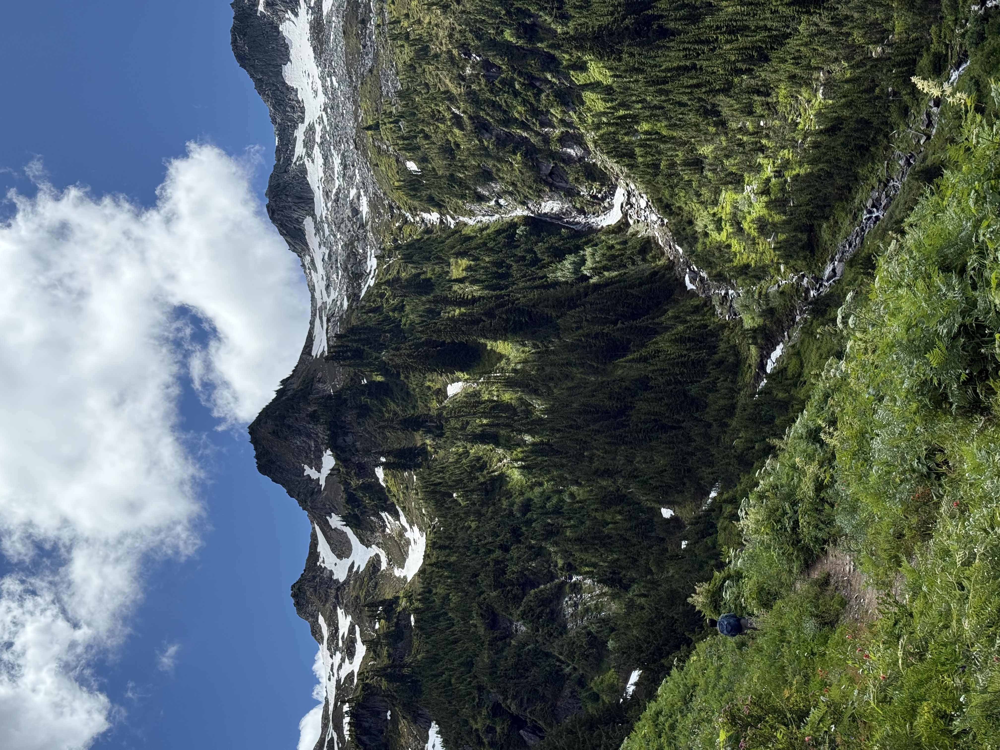
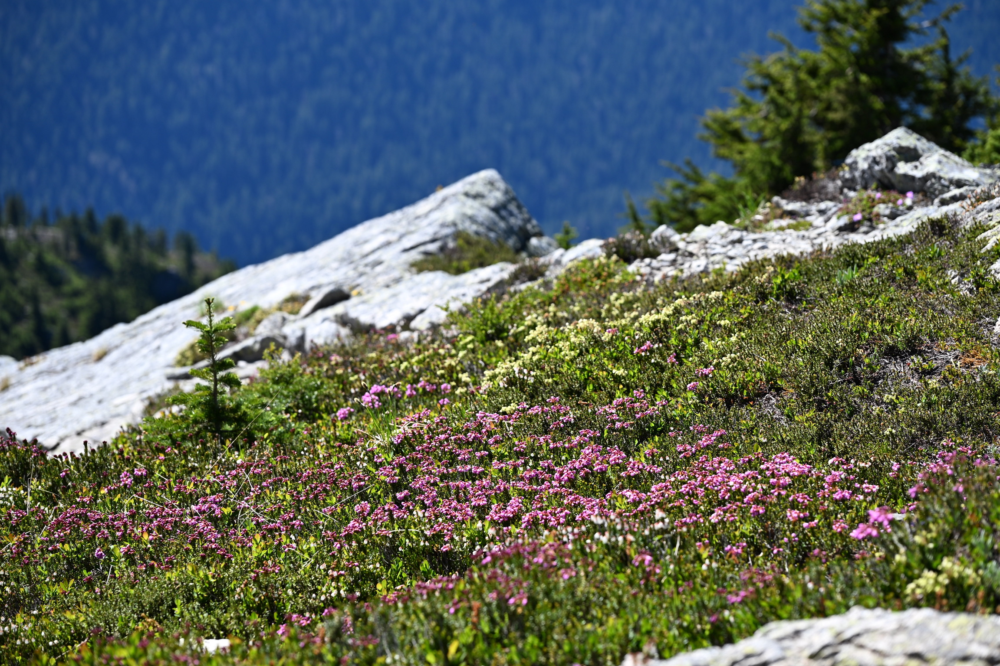
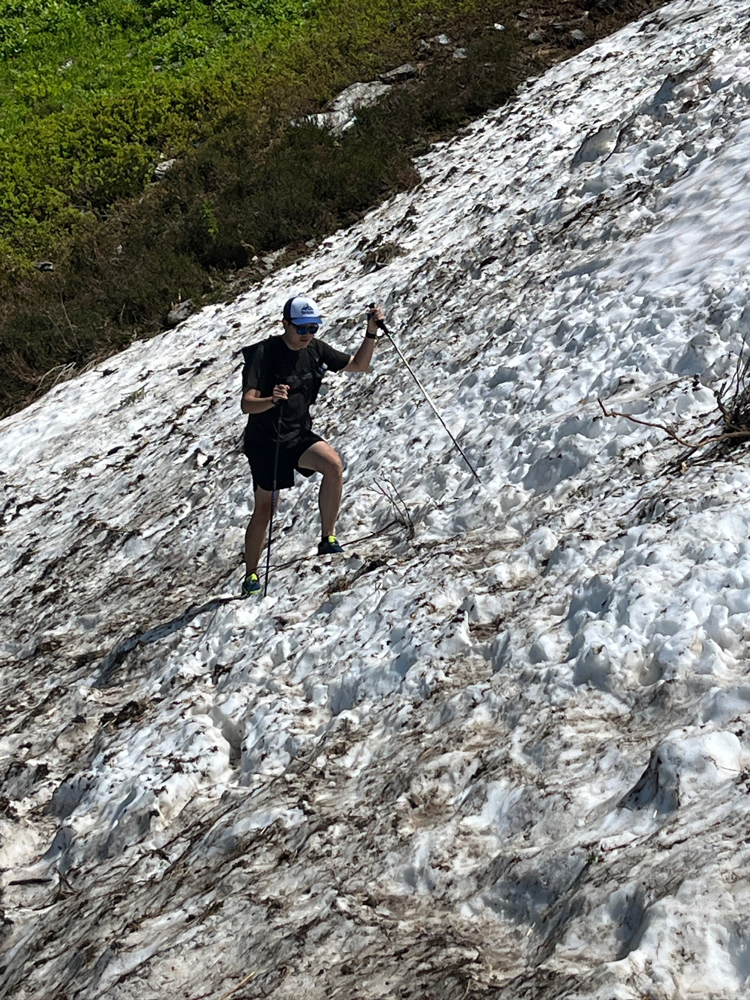
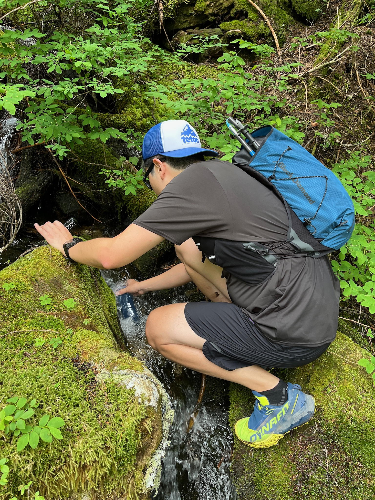
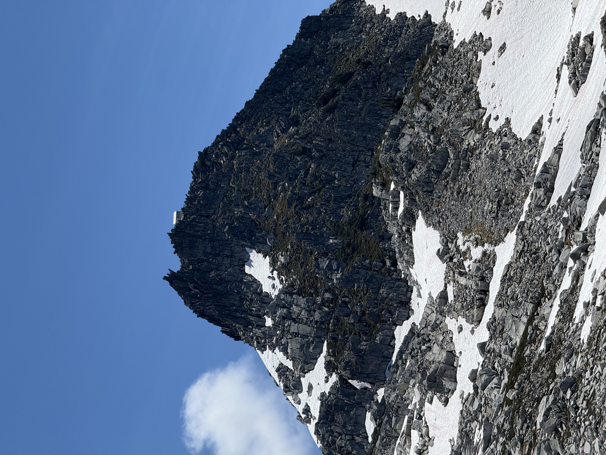
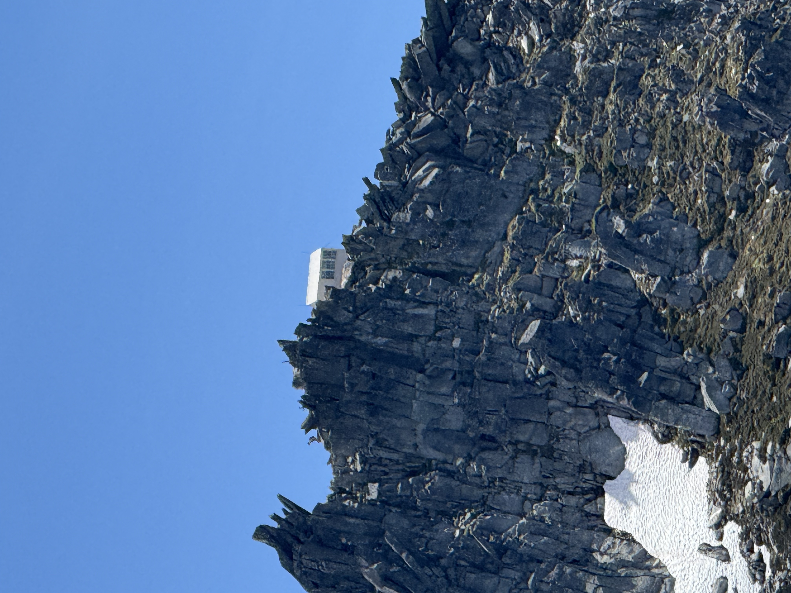
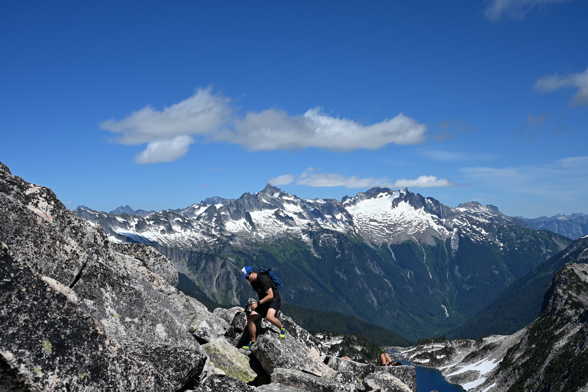

The Hidden Lake Lookout trail in Washington’s North Cascades is an
unforgettable 8-mile round trip with roughly 3,300 feet of
elevation gain, topping out near 6,900 feet. The route begins in
cool forest, climbs through wildflower meadows, and emerges onto
rocky alpine slopes where streams and snowfields still linger in
early season. Higher up, trees give way to stark granite and
sweeping views before you reach the historic fire lookout perched
above Hidden Lake. From the summit, 360-degree vistas reveal
jagged icons like Sahale and Eldorado peaks, a dramatic payoff
that blends challenge, history, and the ever-changing beauty of
the Cascades.
The rough road to the trailhead is narrow and single-lane, with
deep washouts that demand careful driving.
Upper sections of the trail are exposed and wind-swept.

Early views of the North Cascades—already breathtaking.
Lush greens blanket the lower slopes.
Patches of snow still linger on shaded ridges.

Meadows bursting with wildflowers.
Alpine scenery that feels almost unreal.

Early-season snowfields require careful crossing.
The Cascade range stretches endlessly behind.

Refreshing glacier melt for a mid-hike refill.
First glimpse of Hidden Lake’s striking blue waters.
The deep sapphire color looks almost unreal.

The fire lookout comes into view high on the ridge.

Final push to the summit.

A short, fun scramble is required to reach the lookout.
The historic fire lookout is now first-come, first-served for
overnight stays.
Standing at the lookout’s edge with endless views.
Panoramic views from inside the cabin.